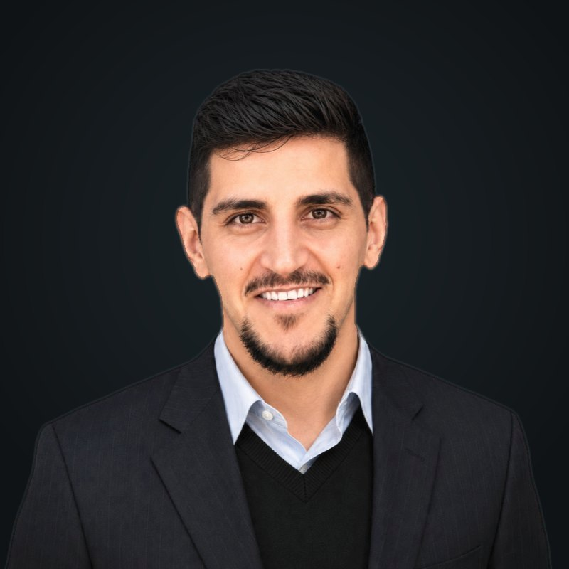

Human–machine interfaces
Surface EMG and eye-gaze control that give people with limited hand function smooth, proportional control of a device.
About

I want to build devices that people with limited movement can control naturally, and to prove, with measurement and testing, that those devices work well enough for daily life.
Where I'm coming from. I trained as a mechatronics engineer and spent nearly 4 years in product design at AHL Logics, taking mobility products from first sketch to mass production. I designed mechanisms, ran FEA, wrote test plans and saw every design pass physical testing before release; one folding mechanism I worked on is now part of 5 U.S. patents pending. That work taught me how a device has to be designed, verified and documented before people can rely on it.
What I'm doing now. As a Fulbright Scholar in the M.S. Biomedical Engineering program at the University of New Haven (GPA 3.9), I'm working on three projects. EyeMotion turns a standard webcam into a hands-free proportional controller, evaluated on a ball-and-beam task; the manuscript is under review. NeuroGrip controls an 11-degree-of-freedom robotic hand in real time from 8 channels of forearm EMG through a neural network. GrapGrow, with a team of Yale University students, is a modular prosthetic arm designed to grow with a child. I also teach in the Instrumentation and Sensors Laboratory and am adapting a ball-and-beam platform into a rehabilitation tool for stroke patients.
What I want to study. In a PhD in biomedical or mechanical engineering, I want to work on questions that connect these projects. How can low-cost sensors like surface EMG and webcams give people smooth, proportional control instead of on/off commands? How should prosthetic and rehabilitation devices adapt as their users change? And how do we test these devices so they are accurate, durable and safe enough to use every day?
I'm looking for labs working on assistive technology, human–machine interfaces, prosthetics, rehabilitation engineering or biomedical instrumentation. Get in touch.
Surface EMG and eye-gaze control that give people with limited hand function smooth, proportional control of a device.
Devices that adapt as their users change, from a growing child to a person recovering from stroke.
Sensing, signal processing and mechanical testing that show a device is accurate, durable and safe for daily use.
Languages: Arabic and English.